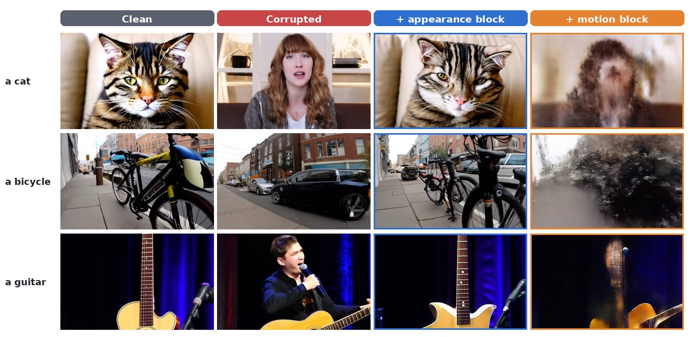

Block-wise Causal Exploration for Subject-driven Video Generation
In diffusion transformers, appearance and motion are entangled inside shared attention blocks — so naive customization corrupts the motion prior. B‑CAUSE causally traces which blocks encode identity versus dynamics, then fine-tunes appearance blocks for identity while steering motion blocks at inference to keep motion natural.
The problem
U-Net video models keep spatial and temporal attention in separate modules, so identity can be tuned without touching motion. Modern diffusion transformers (e.g. CogVideoX) instead entangle both inside shared spatio-temporal attention blocks.
The consequence: applying a LoRA uniformly across all blocks to learn a subject also overwrites the pretrained motion prior — identity improves, but the video stiffens or drifts. The open question is which blocks carry appearance vs. motion, and whether that split can be systematically characterized and exploited.
The block taxonomy
For every block we run a clean → corrupted → restored trio, measuring how much restoring it recovers appearance (30 object subjects) and motion (30 action subjects). Those two scores sort every block into one of four roles — and that 2×2 is the whole method.

Method
The map hands us four block groups. We use them to split customization into a training phase that touches only identity and an inference phase that restores dynamics — never fighting each other.
Lightweight LoRA adapters are placed on appearance-sensitive blocks (plus the shared core), trained with a masked reconstruction loss and a cross-attention loss to encode subject identity — leaving motion blocks frozen.
At denoising time we read feature deltas from motion-sensitive blocks and apply a block-conditioned latent update, reintroducing the base model's natural dynamics under a LoRA-strength schedule.
Results
Same subject, diverse motions and scenes — identity preserved, motion intact.
Comparisons
Same subject, generated by each method. Ours is outlined.
Quantitative
CogVideoX-5B backbone. Higher is better for all columns.
Cite
@inproceedings{bcause2026, title = {B-CAUSE: Block-wise Causal Exploration for Subject-driven Video Generation}, author = {TBD}, booktitle = {TBD}, year = {2026} }